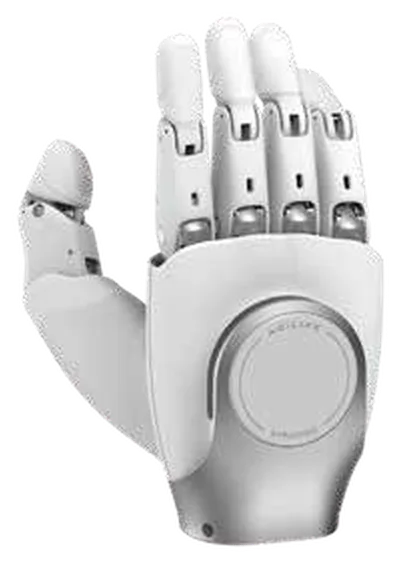
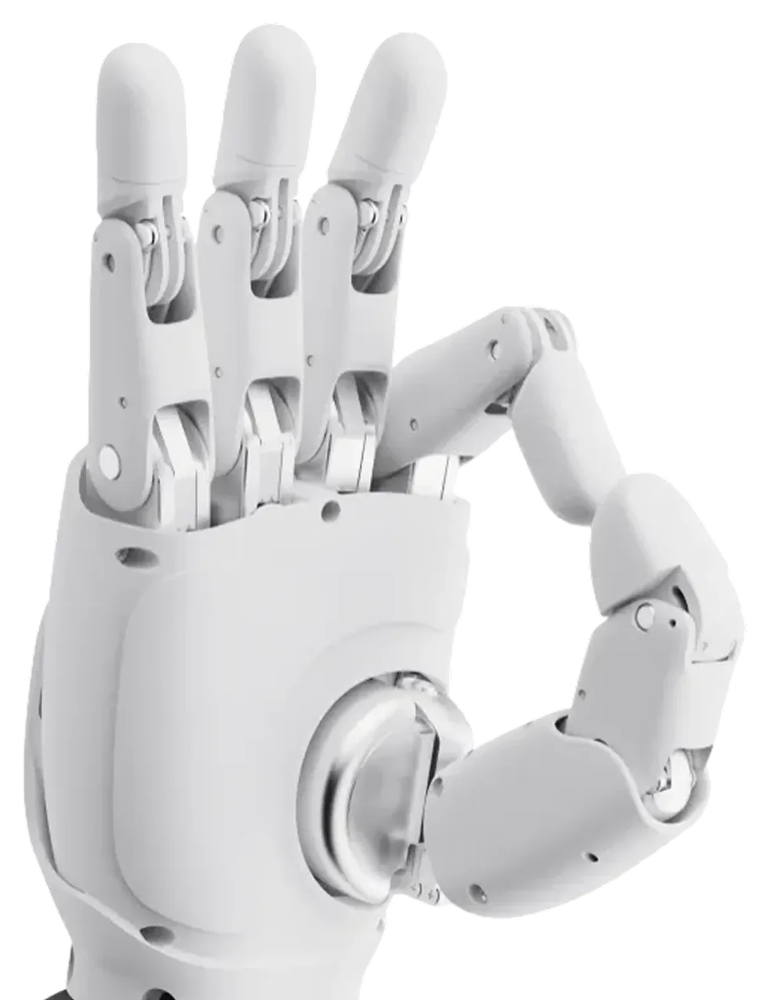
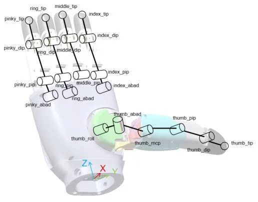
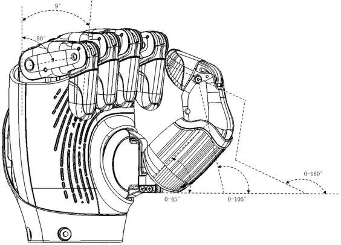

OmniHand Tactile Mano robótica diestra con sensores táctiles
Versión de OmniHand con detección de fuerza en yemas, palma y dorso. Permite agarres más cuidadosos e interacción por contacto con personas.
- Grados de libertad16 (10 activos)
- Resolución táctil0,1 N
- Rango de detección0–20 N
- Peso≤ 570 g

PVP 5.750 €
¿Qué es el OmniHand Tactile?
OmniHand Tactile es la versión con sensores táctiles de la mano robótica OmniHand. Mantiene los 16 grados de libertad (10 activos) y añade detección de fuerza en las yemas, la palma y el dorso de la mano, con una resolución de 0,1 N. Sirve como efector final en robots humanoides y manipuladores móviles que trabajan cerca de personas o con objetos delicados.
Detección táctil distribuida
Más de 300 puntos sensibles a la fuerza repartidos por yemas, palma y dorso de la mano.
Contacto seguro
Diseño antipinzamiento para interactuar con suavidad con personas y objetos.
Interacción por el dorso
Además de gestos y agarres, reconoce el contacto en el dorso de la mano para la colaboración persona-robot.
Sensores robustos
Miden de 0 a 20 N y soportan hasta 200 N sin daños.
Aplicaciones del OmniHand Tactile
Escenarios en los que encaja el OmniHand Tactile.
- Interacción persona-robot con contacto: gestos, tareas de servicio y colaboración
- Manipulación de objetos delicados con control de fuerza
- Robótica móvil y de servicio: reparto, hostelería y asistencia
- Formación y desarrollo de contenidos docentes en manipulación
- Investigación académica en manipulación y tacto
- Efector final para robots humanoides y manipuladores móviles
Especificaciones técnicas del OmniHand Tactile
General
| Peso (sin tapa de muñeca ni tornillos) | ≤ 570 g |
|---|---|
| Dimensiones | 180 × 85 × 38,5 mm |
| Grados de libertad | 16 |
| Grados de libertad activos | 10 |
| Grados de libertad pasivos | 6 |
Prestaciones
| Tiempo mínimo de apertura / cierre (típico) | 0,5 s / 0,5 s |
|---|---|
| Precisión de repetición en la punta de los dedos (típica) | 0,3 mm |
| Fuerza de agarre con cinco dedos | 50 N |
| Carga útil (presentación comercial) | 2 kg en agarre estable; 5 kg en elevación |
Sensores táctiles
| Detección de fuerza | unidimensional en yemas, palma y dorso de la mano |
|---|---|
| Puntos sensibles (presentación comercial) | más de 300 |
| Resolución | 0,1 N |
| Rango de detección | 0–20 N |
| Fuerza máxima admisible sin daños | 200 N |
Electrónica y entorno
| Tensión de trabajo | 18–27 V |
|---|---|
| Interfaz de comunicación | CAN-FD / RS485 |
| Temperatura de trabajo | -10 a 45 °C |
Rango articular
| Dedos índice a meñique · DIP (flexión/extensión) | 0° a 171° |
|---|---|
| Dedos índice a meñique · PIP (flexión/extensión) | 0° a 80° |
| Dedos índice a meñique · ABAD (abducción/aducción) | 0° a 10° |
| Pulgar · DIP (flexión/extensión) | 0° a 160° |
| Pulgar · PIP (flexión/extensión) | 0° a 106° |
| Pulgar · MCP (flexión/extensión) | 0° a 45° |
| Pulgar · ABAD (abducción/aducción) | 0° a 90° |
| Pulgar · ROLL (rotación) | 0° a 60° |
Compatibilidad e integración
| Plataformas | robots humanoides y brazos robóticos habituales |
|---|---|
| Recogida de datos | Dex-UMI |
| Software | ROS 2, SDK en Python y C++ |
| Actualización | OTA (en remoto) |
Galería del OmniHand Tactile

Vista del dorso 
Gesto de precisión entre pulgar e índice 
Esquema de articulaciones de dedos y pulgar 
Rango de movimiento del pulgar